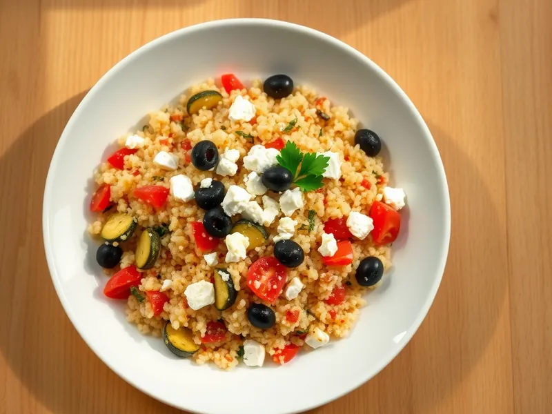

Фото: Иллюстрация ИИ, Cloudflare Workers AI
Кускус с овощами и фетой
Кускус с обжаренным кабачком, перцем, помидорами, маслинами и брынзой
20 мин3 порц.555 ккал на порциюБ 18 · Ж 25 · У 63Средиземноморская кухня
Открыть в приложении: порции, таймеры, список покупок
Продукты на 3 порц.
- Кускус1 стак.
- Вода1,4 стак.
- Кабачок0,7 шт
- Перец болгарский1 шт
- Помидоры2 шт
- Брынза / фета120 г
- Оливки / маслины50 г
- Чеснок2 зуб.
- Оливковое масло2,5 ст. л.
- Лимон0,3 шт
- Соль0,5 ч. л.
- Петрушка по желанию0,5 пучка
Как готовить
- Залейте кускус кипятком с щепоткой соли и 1 ст. л. масла, накройте и оставьте на 5 минут.
- Нарежьте кабачок и перец кубиками 1 см, помидоры кубиками, маслины кольцами, чеснок мелко.
- Разогрейте оставшееся масло на сильном огне и обжарьте кабачок с перцем 6-7 минут, пока они не подрумянятся. В конце добавьте чеснок на 30 секунд.
- Разрыхлите кускус вилкой, добавьте горячие овощи, помидоры и маслины, сбрызните лимонным соком и перемешайте.
- Разложите по тарелкам, сверху раскрошите брынзу и посыпьте петрушкой.
Совет. Брынза солёная, поэтому кускус и овощи почти не солите, пока не попробуете готовое блюдо.